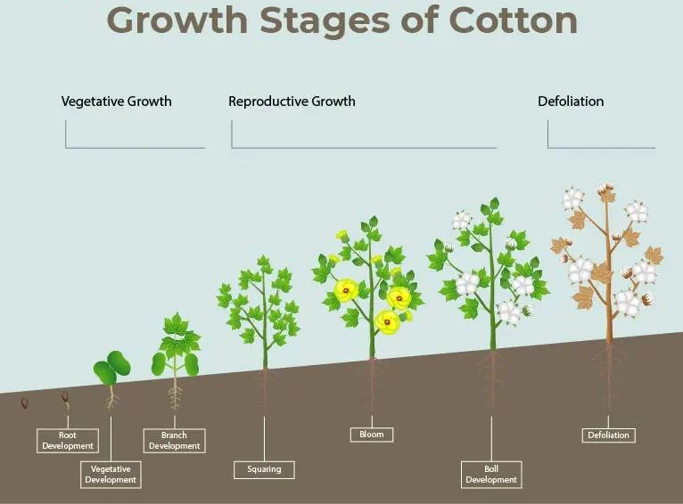
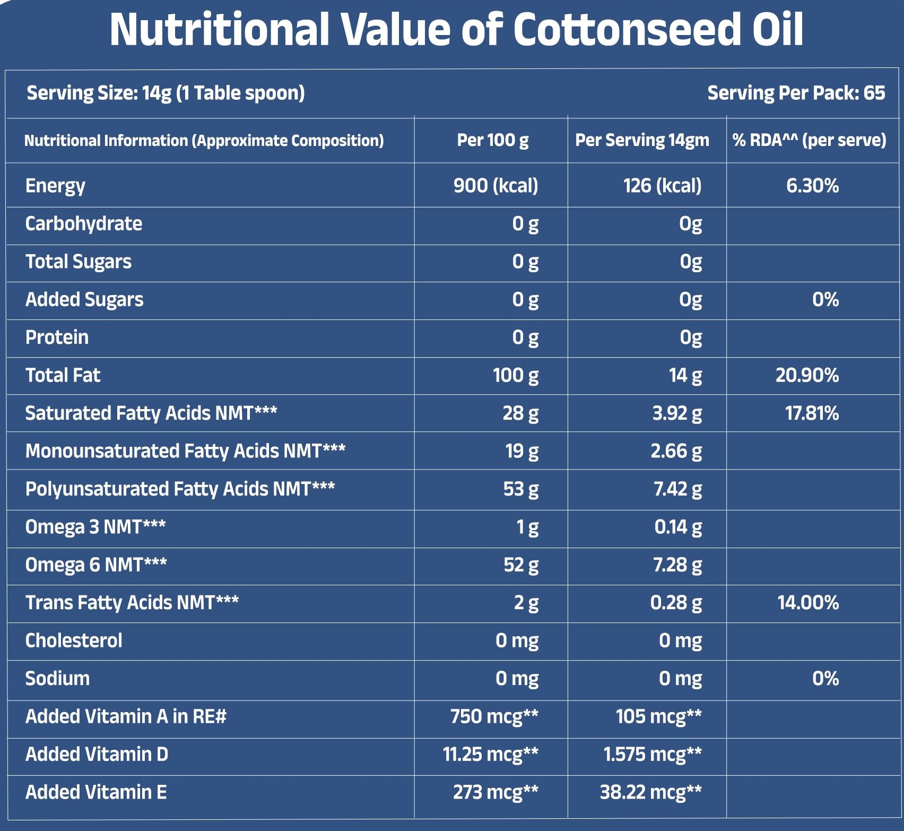
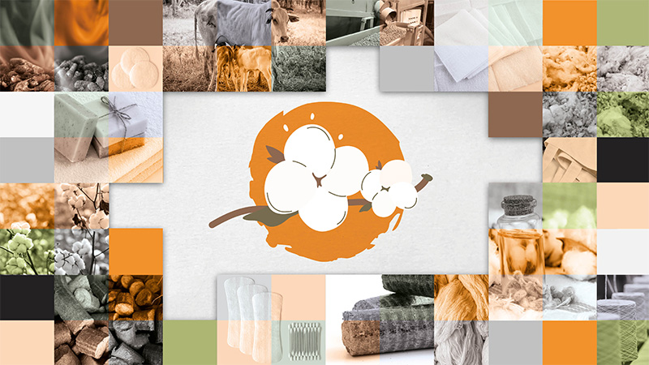
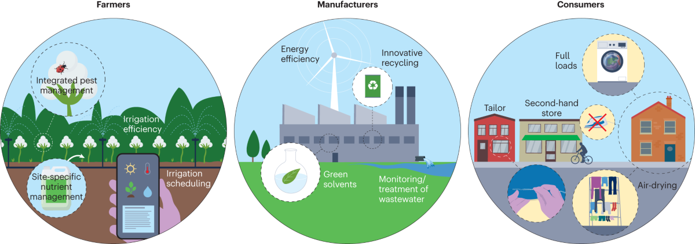

Cotton
Types of Cotton:
Upland Cotton:
Also Known As: Gossypium hirsutum.
Description: Upland cotton is the most widely grown cotton species, known for its adaptability to various climates.
Uses: Primarily used for making clothing, textiles, and home furnishings.
Growth Conditions: Thrives in warm climates with well-drained soil.
Characteristics: Produces medium to long staple fibers.
Egyptian Cotton:
Also Known As: Gossypium barbadense.
Description: Egyptian cotton is known for its long, silky fibers and is considered a premium cotton variety.
Uses: Used in high-quality textiles, luxury bed linens, and clothing.
Growth Conditions: Requires a warm climate with plenty of sunshine and moisture.
Characteristics: Produces longer and finer fibers compared to Upland cotton.
Pima Cotton:
Also Known As: Gossypium barbadense (similar to Egyptian cotton).
Description: Pima cotton is known for its softness, strength, and luster.
Uses: Commonly used in high-end clothing, sheets, and towels.
Growth Conditions: Grows best in warm, sunny climates with well-drained soil.
Characteristics: Produces extra-long staple fibers that are highly durable.
Organic Cotton:
Also Known As: Non-GMO cotton.
Description: Organic cotton is grown without synthetic pesticides or fertilizers, promoting environmental sustainability.
Uses: Used in eco-friendly clothing, textiles, and home products.
Growth Conditions: Requires similar conditions to conventional cotton but emphasizes sustainable practices.
Characteristics: Generally softer and more breathable than conventional cotton.
Growing Conditions
Climate:
Temperature:
Germination Stage: Cotton seeds require a soil temperature of around 15°C to 30°C for optimal germination.
Vegetative Growth Stage: Prefers warm temperatures between 20°C and 30°C.
Reproductive Stage: As cotton transitions to reproductive stages, temperatures between 25°C to 35°C are favorable.
Harvest Stage: Warm and dry conditions are ideal during harvest to ensure the cotton bolls are mature and reduce moisture content, preventing spoilage.
Rainfall and Moisture:
Moderate Rainfall: Cotton requires moderate rainfall, generally between 500mm to 800mm per growing season. Rainfall distribution should be well-timed to ensure sufficient moisture during key growth stages.
Irrigation: In regions where rainfall is insufficient, irrigation is crucial, especially during flowering and boll development. Over-irrigation should be avoided to prevent waterlogging.
Drought Sensitivity: Cotton is relatively drought-tolerant, but consistent moisture is essential for optimal yield.
Sunlight:
Cotton requires full sunlight for at least 6 to 8 hours a day. Adequate sunlight is essential for photosynthesis, which drives plant growth and development.
Cloudy conditions can reduce photosynthetic activity and yield.
Humidity:
Cotton prefers moderate humidity levels. High humidity can create conditions favorable for fungal diseases, impacting yield and quality.
Proper field management practices can help manage disease pressure in high-humidity conditions.
Wind:
Mild winds can aid in pollination, but strong winds can cause lodging, making harvesting difficult.
Windbreaks can be used to protect cotton fields from strong winds, maintaining plant stability.
Soil:
Soil Type:
Loamy Soil: Cotton thrives best in loamy soils, which provide good drainage while retaining moisture.
Clayey Soil: Clayey soils can be suitable if well-drained.
Sandy Soil: Sandy soils are also favorable, offering good drainage and ease of root penetration.

Soil Structure:
Well-Drained: Cotton requires well-drained soil to prevent waterlogging.
Good Aeration: Proper soil aeration is essential for root respiration and overall plant health.
Soil Fertility:
Nutrient-Rich: Cotton grows best in fertile soils with adequate levels of nitrogen, phosphorus, potassium, and micronutrients.
Organic Matter: The presence of organic matter enhances soil fertility and supports beneficial microorganisms.

Soil pH:
Optimal pH Range: Cotton prefers a slightly acidic to neutral soil pH, typically between 5.5 and 7.0.
pH Management: Lime can be added to acidic soils to raise the pH, while sulfur can be used to lower the pH of alkaline soils.
Soil Preparation:
Plowing and Tilling: Proper soil preparation involves plowing and tilling to create a fine seedbed.
Leveling: Leveling the field ensures uniform irrigation and prevents waterlogging.
Soil Conservation:
Erosion Control: Practices such as contour plowing and maintaining ground cover help prevent soil erosion.
Crop Rotation: Rotating cotton with other crops can improve soil health and reduce pest buildup.
Water Requirements:
General Water Needs:
Cotton requires a total of approximately 500-800 millimeters (mm) of water throughout their growing season, depending on the variety, climate, and soil conditions.
Critical Growth Stages:
Germination: Adequate soil moisture is necessary for seed germ ination, typically requiring around 25-50 mm of water during this stage.
Seedling Stage: Consistent moisture is crucial for young plants, needing about 50-75 mm of water to establish strong roots.
Flowering Stage: During flowering, cotton plants require increased moisture, approximately 75-100 mm, to support bud formation and development.
Boll Development Stage: This stage is critical for yield, requiring around 100-150 mm of water to ensure proper boll filling and maturation.
Pre-Harvest Stage: Reducing water supply before harvest helps in drying the bolls, making them easier to pick and improving fiber quality.
Drought and Stress Management:
Drought-Resistant Varieties: Plant drought-resistant cotton varieties in regions prone to water scarcity.
Deficit Irrigation: Implement strategies where water is applied during the most critical growth stages to manage water resources during drought conditions.
Planting and Seeding:
Planting:
Cotton can be sown either by broadcasting seeds or by using seed drills for more uniform planting. They are typically sown in the spring when soil temperatures are warm enough for germination.
Seeding Rates:
The seeding rate varies but generally ranges from 30,000 to 40,000 seeds per hectare, depending on the variety and planting method.
Value Of Cotton:
Fiber:
Cotton is primarily valued for its fiber, which is used in textiles and clothing.
Oil:
Cottonseed oil is extracted from the seeds and is used in cooking and food products.
Protein:
Cottonseed meal, a by-product of oil extraction, is a good source of protein for animal feed.
Uses:
Textiles:
Cotton is used in a variety of textile products, including clothing, bed linens, and towels.
By-Products:
Cotton stalks and leaves can be used for animal bedding, mulch, and bioenergy production.
Environmental Impact and Sustainability:
Cotton cultivation can be resource-intensive, particularly in terms of water and pesticides. Sustainable practices such as organic farming, crop rotation, and integrated pest management can help minimize environmental impact. Implementing these practices can improve soil health and reduce greenhouse gas emissions.
